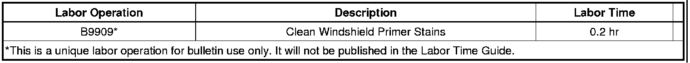
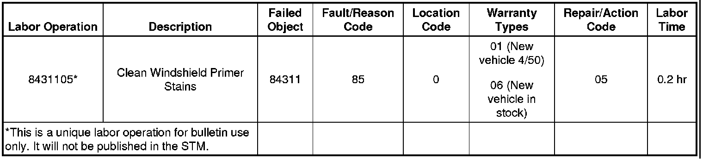

Body - Stain/Film On Windshield Glass Perimeter
TECHNICALBulletin No.: 09-08-48-006
Date: September 18, 2009
Subject: Clear Stain or Film on Inside Perimeter of Windshield Glass (Clean/Polish Glass)
Models:
2010 and Prior Passenger Cars and Trucks (Including Saturn and Saab)
2010 and Prior HUMMER H2, H3
Condition
Some customers may comment on a clear stain or film on the inside of the windshield glass. This condition appears along the outer edges of the glass along the top, bottom or A-pillar areas. Normal glass cleaning procedures will not remove the stain.
Cause
The assembly plant uses a clear sealer/primer on the outer edge of the windshield glass to improve adhesion to the urethane adhesive that bonds the windshield glass to the vehicle body. Excess sealer/primer may drip or flow onto the windshield and cause a stain. Once the sealer/primer dries, it may appear to have etched the glass.
Correction
Note
A "white" type of toothpaste is recommended for this repair. Gel-type toothpaste may provide less satisfactory results.
Use a small amount of toothpaste on a soft, cotton cloth to polish the stained area. It may be necessary to wrap the cloth around a paint stir stick or a similar tool to reach the lower corners of the windshield glass.
After polishing the glass, clean the inside of the windshield glass with a clean, damp, cotton cloth and verify all of the stain is removed. Do not use any cleaners or solvents - use only clean warm water.
Warranty Information (excluding Saab U.S. Models)
For vehicles repaired under warranty, use:

Warranty Information (Saab U.S. Models)

For vehicles repaired under warranty, use the table.

Disclaimer